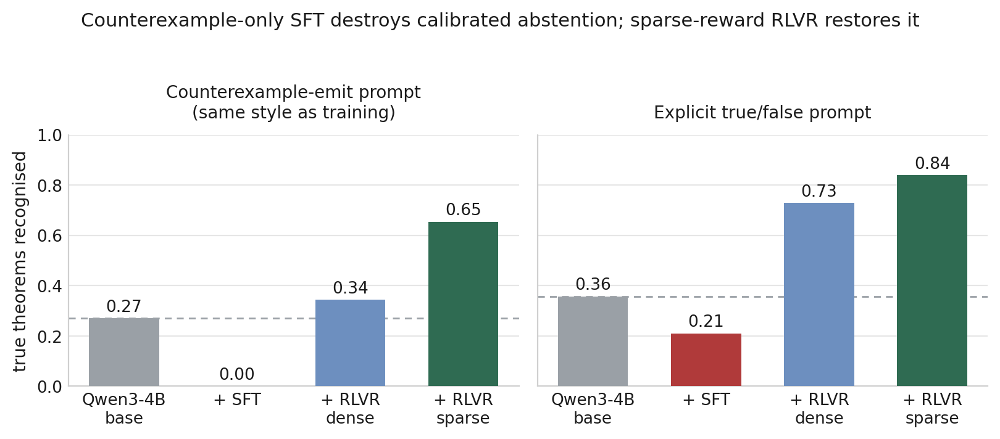
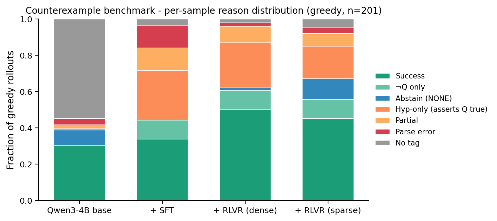
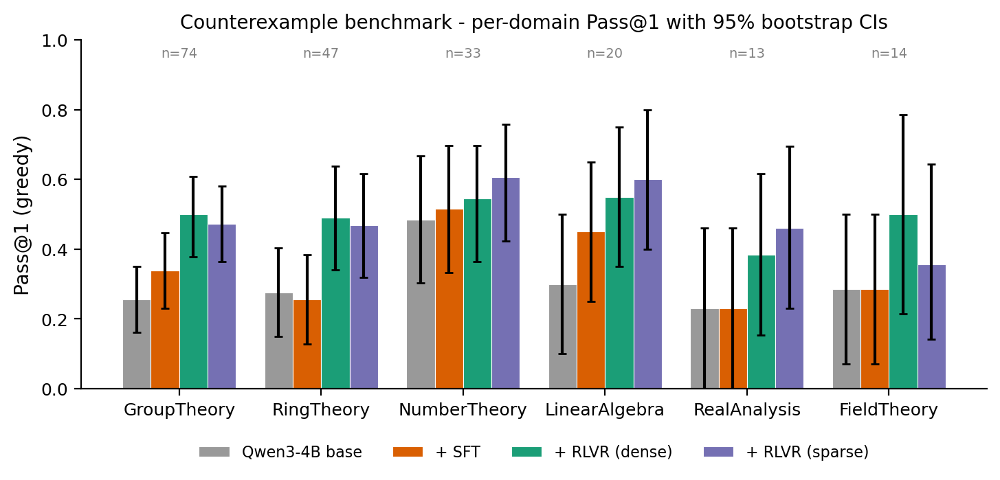

Summary
Fine-tuning a model only on counterexamples destroys its ability to recognise that a theorem is true. Reinforcement learning against the same verifier repairs the damage, but only when the reward is sparse.
We drop one hypothesis from each of 6,748 undergraduate theorems and keep the mutations for which a teacher model can write a working Python verifier. The result is SymCE: 4,707 false conjectures, each with an executable oracle. A verifier runs in about 130 ms, so it doubles as the reward function during reinforcement learning.
The task
Given a false conjecture, emit one Python expression on which every remaining hypothesis holds and the conclusion fails. The verifier returns one boolean per hypothesis plus one for the negated conclusion. No language model judges the answer.
# "The direct product of two abelian groups is abelian."
# Drop "G is abelian" and the claim is false.
>>> run_oracle(
... "data/verifiers/GroupTheory/abelian_direct_product__h1.py",
... "(SymmetricGroup(3), CyclicGroup(2))",
... n_conditions=2).conditions
[True, True]
# H is abelian; S3 x C2 is not. Counterexample accepted.A model may instead answer NONE, claiming that no counterexample exists. Whether it keeps that option is the subject of the paper.
The imitation trap
Counterexample-only training data contains no true statements. After supervised fine-tuning the model is better at mathematics, with MATH-500 rising from 0.13 to 0.55, yet it recognises none of 347 true theorems under the prompt style it was trained on. Asked an explicit true/false question, it calls 70 % of true theorems false. The base model does not.

The two reward shapes reach the same in-domain success and differ by 33 points here. Under the dense reward, partial credit for satisfying some hypotheses makes a wrong guess score better than abstaining, so the model always guesses. Under the sparse reward a wrong witness scores what abstention scores, so abstention survives as an available action. Section 6.3 of the paper traces this through a seven-way outcome taxonomy over every rollout.

Results
| Qwen3-4B | SymCE Pass@1 | SymCE Pass@8 | Truth SymCE-prompt | Truth-classify |
|---|---|---|---|---|
| base | 0.30 | 0.49 | 0.27 | 0.36 |
| + SFT | 0.34 | 0.62 | 0.00 | 0.16 |
| + RLVR dense | 0.49 | 0.66 | 0.33 | 0.71 |
| + RLVR sparse | 0.46 | 0.64 | 0.66 | 0.75 |
| Best 7B open-weights | 0.30 | 0.57 | – | – |
| Frontier APIs (6) | 0.42 to 0.58 | up to 0.77 | – | – |
Our rows are means over seeds 42, 19, 31 and 64; the comparator rows are the reference seed. SymCE Pass@k is the counterexample benchmark (n=201). The two Truth columns are the theorem-truth probe (n=347) under the two prompt styles.
The 4B model beats every 7B mathematics specialist we evaluated and sits inside the frontier-API range, where one of the six APIs beats it. Under unchanged chain-of-thought prompting it also improves on GSM8K (0.83 to 0.88), MATH-500 (0.13 to 0.65) and MMLU-college-math (0.34 to 0.72). No benchmark examples or answer formats appear anywhere in the pipeline. GSM8K is the cleanest case, because the base already formats answers correctly there and SFT alone produces no gain.

SymCE
- 4,707
- false conjectures
- 3,485
- source theorems
- 6
- subdomains
- 132 ms
- median verification
Group, ring, number and field theory, linear algebra and real analysis. The release ships all 12,376 generated verifier modules, the four splits (test 201, SFT 1,000, RLVR 3,506, true-theorem probe 347), the witness schemas and the human-audit annotations.
from datasets import load_dataset
ds = load_dataset("ce-rlvr/SymCE", "test")["test"]Verifiers are written by a language model, so we measured their reliability instead of assuming it. Judging verifier source proved unworkable, because the code leans on heuristics that are incomplete in theory but correct on the cases that arise. We audited the accept/reject decision on real model outputs instead: 177 decisions checked by hand, 97.7 % correct, a 2.0 % false-accept rate, and no case traced to a faulty verifier. All four disputed decisions are released with the annotations.
Limitations
Every trained model here is 4B, adapted with LoRA and optimised with GRPO on one consumer GPU. Larger scales, full-parameter fine-tuning and other reinforcement learning algorithms are untested. Mutations are single-hypothesis drops only. The verifier substrate is bounded by what SymPy and Z3 decide, which excludes topology and higher-order logic. The audit had one annotator, so we report no inter-annotator agreement. We did not cross-evaluate on COUNTERMATH, whose scoring runs on the authors' server.
Citation
@inproceedings{zouak2026symce,
title = {Counterexample Generation via Per-Theorem
Symbolic Verifiers: When Imitation Hurts
and Reinforcement Repairs},
author = {Zouak, Omar Farouk and
Boukhalfa, Houssam Eddine and
Soumaya, Lakehal and
Katiyar, Shiv and
Nefti-Meziani, Samia},
booktitle = {Findings of the Association for
Computational Linguistics: EMNLP 2026},
year = {2026}
}